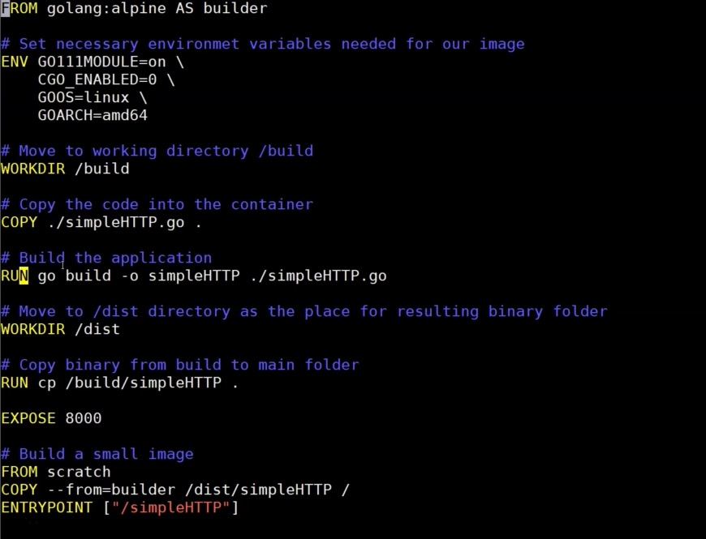

official Ubuntu installation guide: https://docs.docker.com/install/linux/docker-ce/ubuntu/
sudo apt-get remove docker docker-engine docker.io containerd runc docker-ce docker-ce-cli containerd.io
#update package index sudo apt-get update # install packages to allow apt using https repositories sudo apt-get install apt-transport-https ca-certificates curl gnupg-agent software-properties-common # add Dockers GPG key curl -fsSL https://download.docker.com/linux/ubuntu/gpg | sudo apt-key add - # configure the STABLE repository sudo add-apt-repository \ "deb [arch=amd64] https://download.docker.com/linux/ubuntu $(lsb_release -cs) stable" # ....and start the installation sudo apt-get update && sudo apt-get install docker-ce docker-ce-cli containerd.io
Check the installation, by running a hello world container:
**Post-install steps to run _docker_ without prefixing it with _sudo_**
```bash
sudo groupadd docker
sudo usermod -aG docker $USER
# logout and login again
<p class="mume-header " id="logout-and-login-again"></p>
If you used docker via sudo docker before, you will run the following now:
sudo chown "$USER":"$USER" /home/"$USER"/.docker -R sudo chmod g+rwx "$HOME/.docker" -R
Check without sudo, by running a hello world container:
### Windows For users with Windows 10 64-bit **Pro** or **Enterprise** or **Education**-version, use _Docker Desktop_ as shown here: https://docs.docker.com/docker-for-windows/install/ Users with Windows 10 **Home**, Windows pre-10 versions, use _Docker Toolbox_ as shown here: https://docs.docker.com/toolbox/toolbox_install_windows/ > Docker Toolbox ships also Oracle VirtualBox as virtualization solution, thereby this package is huge (~ 1GB) and > should just be used if there are no other possibilities to run Docker. > Windows 10 Home users should think about enabling the builtin Linux subsystem and install Ubuntu there !! ### Mac **Docker Desktop**: for Mac hardware >2010 and MacOS >= 10.13 https://docs.docker.com/docker-for-mac/install/ **Docker Toolbox**: for Mac users that do not cover above criteria https://docs.docker.com/toolbox/toolbox_install_mac/ ## Docker base commands ```bash # check version docker version # list images sudo docker image ls # delete an image sudo docker image rm <image-id> # where <image-id> is shown in output of "sudo docker image ls" # list containers sudo docker container ls [--all] # delete a container sudo docker container rm <container-id> # where <container-id> is shown in the output of "sudo container ls --all" # run a container sudo docker run <image> # run an ubuntu container, provide env variables and run command `env` command within container to check for the variable provided sudo docker run -e ENV_VAR1=myvalue1 ubuntu env | grep ENV_VAR # run a plain nginx webserver, # with random port assignment on local port => port 80 in container # giving it a name "my-nginx" # start the container in the background: "-d" sudo docker run --name my-nginx -P -d nginx # start and stop a container sudo docker start <container name> sudo docker stop <container name> sudo docker rm <container name> # get details of a container sudo docker inspect <container name> sudo docker logs <container name> # search for e.g. "nginx" containers from public repo sudo docker search nginx
First container creation
cat > Dockerfile <<EOF FROM busybox CMD echo "Hello world! This is my first Docker image." EOF docker build -t container-1 ./ # run the docker image docker run container-1 docker run -it container-1 /bin/sh
Interaction with Docker Hub
# login to Docker Hub docker login # create Dockerfile for sample Nginx container (built on Ubuntu) cat > Dockerfile <<EOF FROM ubuntu:latest RUN DEBIAN_FRONTEND=noninteractive apt-get update RUN DEBIAN_FRONTEND=noninteractive apt-get -yq install net-tools nginx EXPOSE 80 ENTRYPOINT ["/usr/sbin/nginx", "-g", "daemon off;"] EOF # build and run sudo docker build -t our-nginx . docker run -d -p 8888:80 our-nginx # build your image sudo docker build -t <your-dockerhub-name>/<your-docker-repo-name> . # test your container locally sudo docker run <your-dockerhub-name>/<your-docker-repo-name> . # push it to your Docker repository sudo docker push <your-dockerhub-name>/<your-docker-repo-name>
